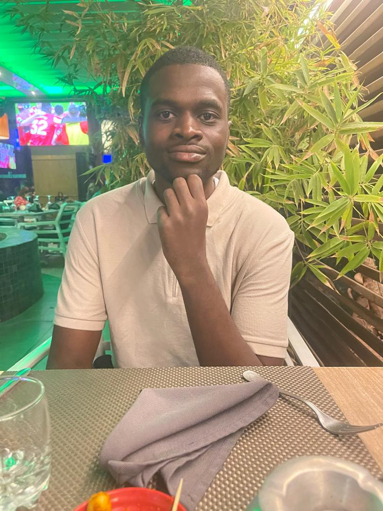

ONDONGO KYSO STACHYS
Étudiant en deuxième année à l'EMG (École Marocaine de Rabat d'Ingénieur). Ancien étudiant de l'ENSP (École Nationale Supérieure Polytechnique) de l'Université Marien NGOUABI. Titulaire d'un bac D en Sciences Humaines (SVT) obtenu en 2021. Passionné par les sciences et l'ingénierie, je souhaite mettre mes compétences au service de projets innovants.
2024 - Présent
École d'Ingénieur - EMG Rabat
Deux années de prépa à l'École Marocaine de Rabat d'Ingénieur. Formation en ingénierie avec spécialisation en cours d'acquisition.
2021 - 2023
ENSP - Université Marien NGOUABI
Deux années à l'École Nationale Supérieure Polytechnique. Concours réussi en 2021.
2021
Baccalauréat D - SVT
Obtention du Baccalauréat série D en Sciences Humaines (Sciences de la Vie et de la Terre).